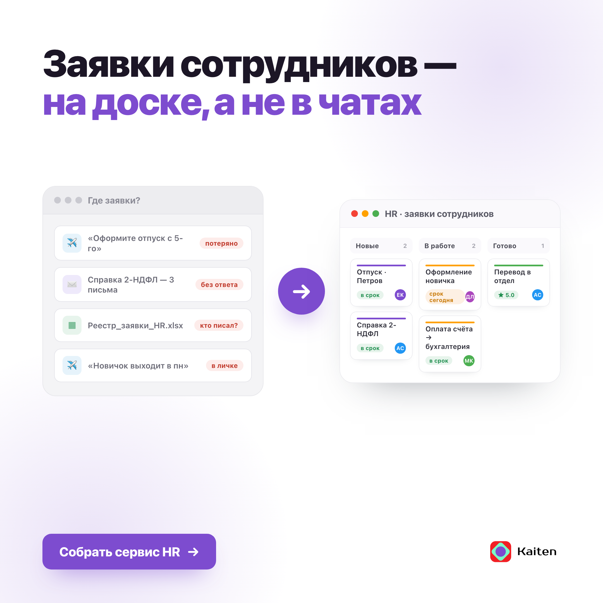
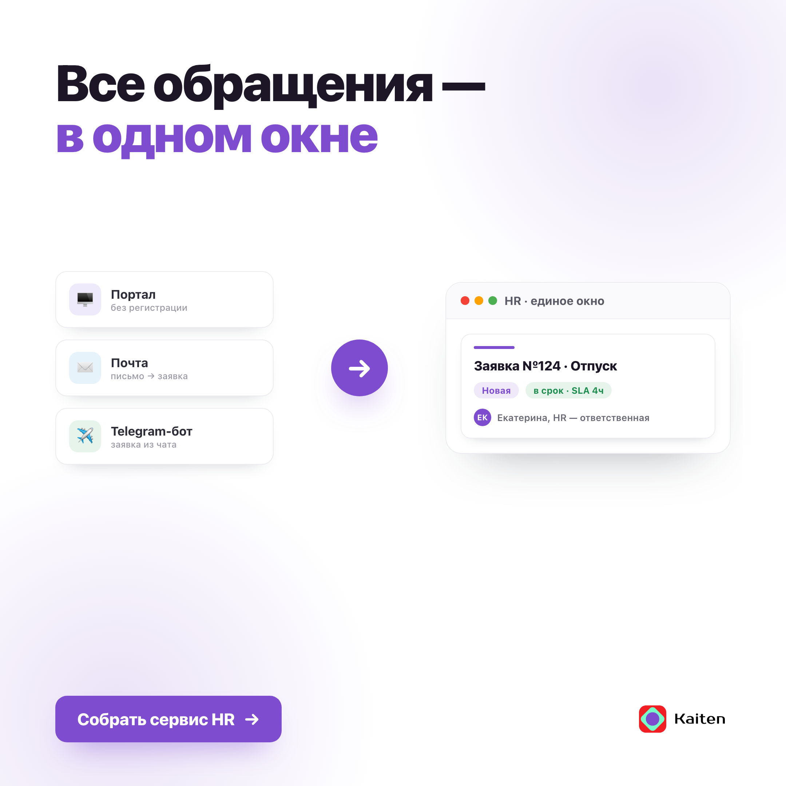
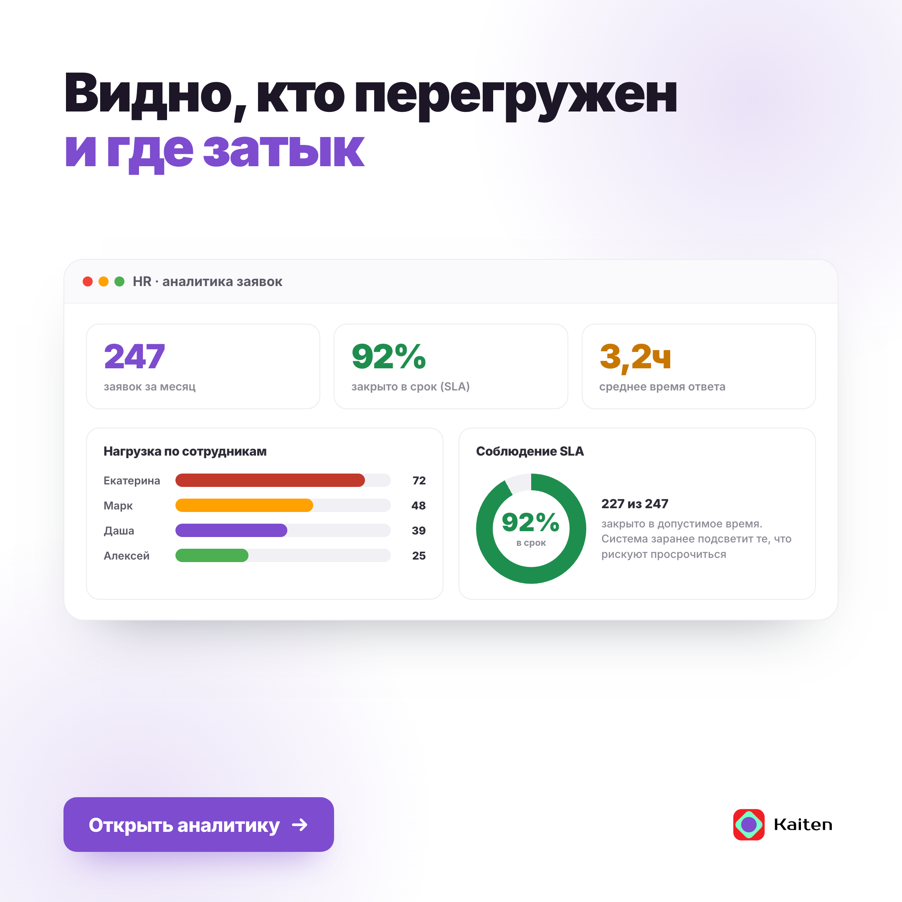
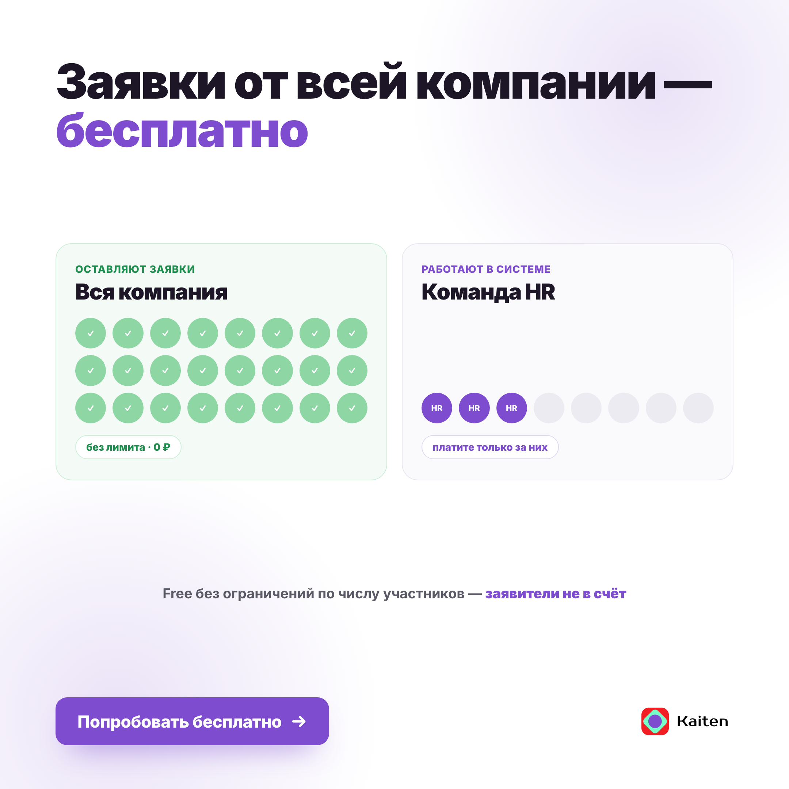
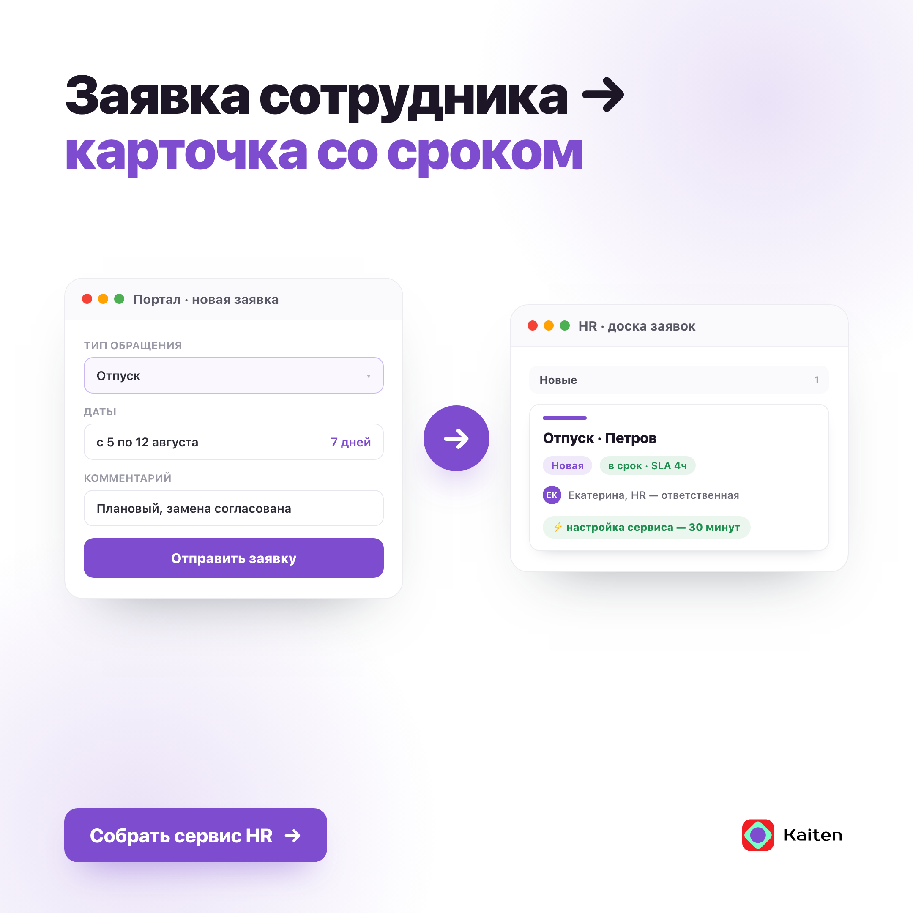

Боль конкретна и управленческая («HR как чёрный ящик»), продукт отвечает дословно: единое окно заявок + передача между отделами + аналитика и SLA. Тон совпадает с аналитическим регистром канала.
TL;DR: Сильнейший заход сета (86.0). Живая боль ЛПР, все факты сверены с продуктом, безлимитный Free бьёт порог конкурентов. Блокеров нет. ⚠️ Голос-профиль — гипотеза по 1 посту.





| Линза | Вес | Балл | Вердикт линзы |
|---|---|---|---|
| Message–Market Fit | ×2.5 | 88 | «HR как чёрный ящик» — живая управленческая боль. Потерянные заявки в почте/чатах узнаёт каждый HRD; вопрос «сколько просрочено» бьёт в отсутствие цифр |
| Persona / ICP Fit | ×2 | 86 | Ядро канала (H1 HRD, H4 аналитик) решает про инструмент и любит данные. «Аналитика без ручных таблиц» — прямое попадание в аналитика |
| Objections & Positioning | ×2 | 84 | Без грязи в адрес конкурентов, «мы собираем это в один модуль» — изнутри. Канон единой рабочей среды соблюдён |
| Claims Accuracy & Risk | ×2 | 88 | Модуль Service Desk, портал/почта/бот, передача между отделами, аналитика/SLA, безлимитный Free, настройка 30 мин — всё сверено с product-facts и лендингом |
| Channel & Funnel / CTA | ×1.5 | 84 | Прямая ссылка на отраслевой лендинг, низкий порог («настроить 30 минут»). Оффер-пост — закрывающий, первым касанием |
| Creative & Copy Craft | ×1 | 84 | Аналитический регистр канала, маркер 📌, «факт → вывод для роли». Свобода от шаблонного скелета: один оффер-пост на сет |
| Чек-пункт | Балл |
|---|---|
| Регистр (деловой аналитический) | 17/20 |
| Ритм (короткие абзацы, вывод в финале) | 17/20 |
| Приёмы канала (📌, факт→вывод для роли) | 16/20 |
| Табу (нет сниженной лексики/эмоций/лозунгов) | 18/20 |
| Оформление (маркеры, цифры) | 14/20 |
Сколько заявок сейчас в работе у вашего HR — и сколько из них просрочено? Если ответа в цифрах нет, для руководства HR остаётся чёрным ящиком. INF
вопрос-заход в боль ЛПР; «чёрный ящик» — управленческая рамка канала
Отпуска, справки, оформление новичков, согласования приходят в почту, личку и чаты. Часть теряется, часть всплывает, когда сотрудник приходит спросить лично. Нагрузку между кадровиками не видно, пока кто-то не выгорит. INF
бытовая боль сегмента (панель H3/H2); без цифр — мягкий INF
Мы собираем это в один модуль — «Служба поддержки» Кайтена. Сотрудник оставляет заявку через портал, почту или Telegram-бота, регистрация не нужна. Обращение падает карточкой на канбан-доску HR: ответственный, приоритет, срок. Из HR карточку можно передать в бухгалтерию или юристам — контекст едет вместе с ней. FACT
модуль Service Desk (product-facts §46); каналы, канбан, передача между отделами — лендинг
Сверху — аналитика без ручных таблиц: сколько заявок и на каком этапе, кто перегружен, укладываемся ли в SLA. FACT
отчёты по этапам/нагрузке/SLA — лендинг раздел аналитики
📌 Free не ограничен по числу заявителей — платите только за тех, кто работает в системе. Обращения от всей компании — бесплатно. FACT
Free без ограничений по участникам (§54); «платите за работающих» — лендинг
Настроить первый сервис — около 30 минут: kaiten.ru/teams/kaiten-for-hr FACT
настройка ~30 мин — лендинг; UTM/erid добавить при публикации
| Риск / правка | Приор. | Суть |
|---|---|---|
| Голос-профиль на 1 посте | P1 | Занести 5–7 постов канала до публикации — voice-match откалибруется, риск «выпадает из ленты» снимется по фактуре |
| «часть теряется», «пока кто-то не выгорит» — обобщения | P2 | Допустимо как INF: мягко, без цифр. Усилить можно одним реальным примером нагрузки, если есть |
| Оферта / публикация | P1 | От чьего лица пост, цена, дата, erid, UTM. Сверить на дату: лимиты Free и актуальность кейса Академии Йоги |